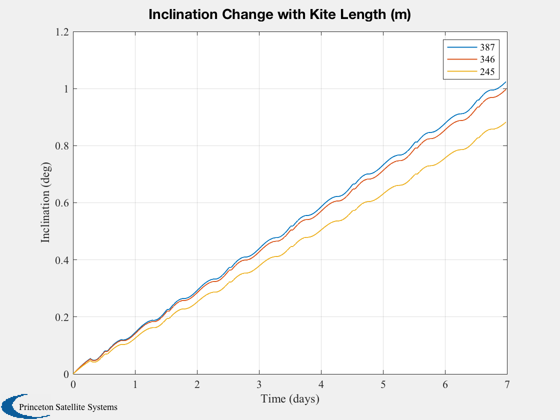
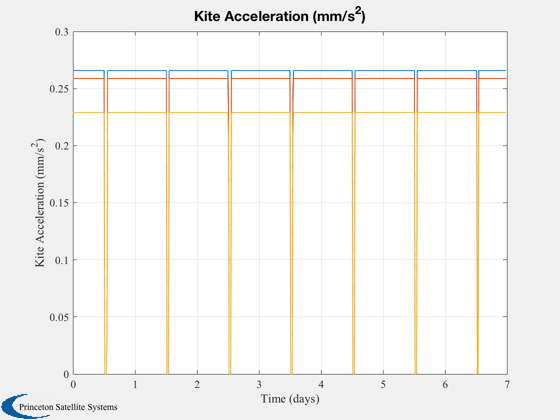
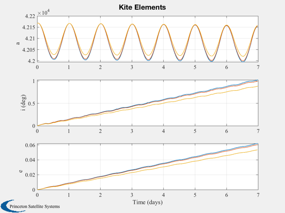
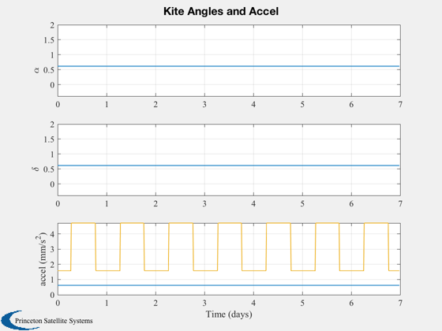

Simulate inclination change in GEO orbit.
The simulation is run three times, for three different sail areas.
The largest sail modeled can achieve an inclination change of one degree per
week. You can also run the sail perfectly sun-pointing for comparison.
Since version 7.
------------------------------------------------------------------------
See also Cone, NPlot, Plot2D, TimeLabl, Cross, Dot, RK4, Unit, JD2000,
El2RV, RV2El, Eclipse, SunV1, Accel, ConeClockToU, UToConeClock, delta,
EarthGuidance
------------------------------------------------------------------------
Contents
Set up the parameters
mu = 398600.44;
Asail = [150000 120000 60000];
arealDensity = 0.025;
mSail = Asail*arealDensity;
mSC = [450];
cLight = 3e8;
flux = 1367;
m2km = 0.001;
mass = mSail + mSC;
mSim = length(mass);
Control method
method = 'inc';
Number of sim steps and duration
nSim = 600;
nDays = 7;
dT = nDays*86400/nSim;
Simulation setup
Plotting array
nPlot = zeros(mSim,nSim);
aPlot = zeros(mSim,nSim);
iPlot = aPlot;
ePlot = aPlot;
accPlot = aPlot;
conePlot = aPlot;
clckPlot = aPlot;
Global for the time interface
global simulationAction
simulationAction = ' ';
d = struct;
d.method = method;
Run the simulation(s)
for j = 1:mSim
acc0 = 2*Asail(j)*flux/cLight/mass(j)*m2km;
el0 = [42167 0 0 0 0 0];
[r0,v0] = El2RV( el0, [], mu );
x = [r0;v0];
jD = JD2000+90;
disp('-----------------------------')
disp(['Simulation ' num2str(j)])
disp('-----------------------------')
kS = 1;
for k = 1:nSim
r = x(1:3);
v = x(4:6);
if floor(k/nSim*10) == kS
disp(['Sim is ' num2str(kS) '0% finished.'])
kS = kS+1;
end
[uS, rS] = SunV1( jD );
d.method = method;
[q,alphaG,deltaG,u] = EarthGuidance( 0, [r;v], d, struct('uSun',uS) );
u2 = ConeClockToU( alphaG, deltaG, r, v, uS );
[n, eclipseType] = Eclipse( r, rS*uS );
accel = n*acc0*cos(alphaG);
aExt = -accel*u;
el = RV2El( r, v, mu )';
nPlot(j,k) = n;
aPlot(j,k) = el(1);
iPlot(j,k) = el(2)*180/pi;
ePlot(j,k) = el(5);
accPlot(j,k) = accel;
conePlot(j,k) = alphaG;
clckPlot(j,k) = deltaG;
x = RK4( 'FOrbCart', x, dT, 0, aExt, mu );
jD = jD + dT/86400;
end
end
Plot the results
[t, tL] = TimeLabl( (0:(k-1))*dT );
Plot2D(t,iPlot,tL,'Inclination (deg)', 'Inclination Change with Kite Length (m)')
legend(num2str(sqrt(Asail)',3))
Plot2D(t,accPlot*1e6,tL,'Kite Acceleration (mm/s^2)')
Plot2D(t,[aPlot;iPlot;ePlot],tL,{'a' 'i (deg)' 'e'},['Kite Elements'],'lin',...
{[1 2 3],[4 5 6],[7 8 9]})
Plot2D(t,[conePlot;clckPlot;accPlot*1e6],tL,{'\alpha' '\delta' 'accel (mm/s^2)'},...
['Kite Angles and Accel'],'lin',{1,2,[3 4 5]})
-----------------------------
Simulation 1
-----------------------------
Sim is 10% finished.
Sim is 20% finished.
Sim is 30% finished.
Sim is 40% finished.
Sim is 50% finished.
Sim is 60% finished.
Sim is 70% finished.
Sim is 80% finished.
Sim is 90% finished.
Sim is 100% finished.
-----------------------------
Simulation 2
-----------------------------
Sim is 10% finished.
Sim is 20% finished.
Sim is 30% finished.
Sim is 40% finished.
Sim is 50% finished.
Sim is 60% finished.
Sim is 70% finished.
Sim is 80% finished.
Sim is 90% finished.
Sim is 100% finished.
-----------------------------
Simulation 3
-----------------------------
Sim is 10% finished.
Sim is 20% finished.
Sim is 30% finished.
Sim is 40% finished.
Sim is 50% finished.
Sim is 60% finished.
Sim is 70% finished.
Sim is 80% finished.
Sim is 90% finished.
Sim is 100% finished.
   